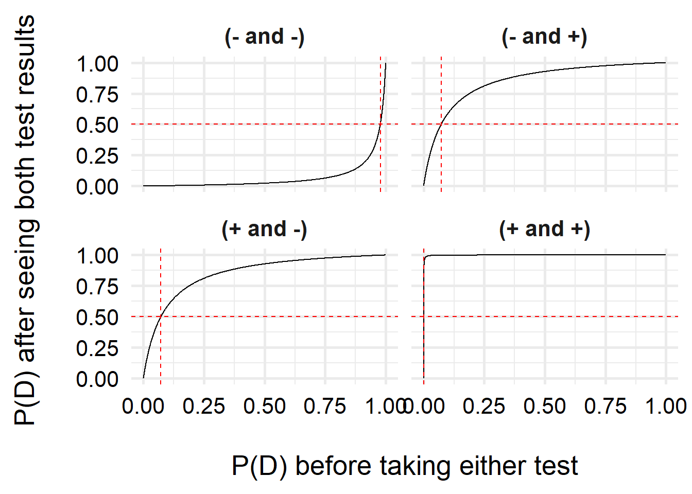
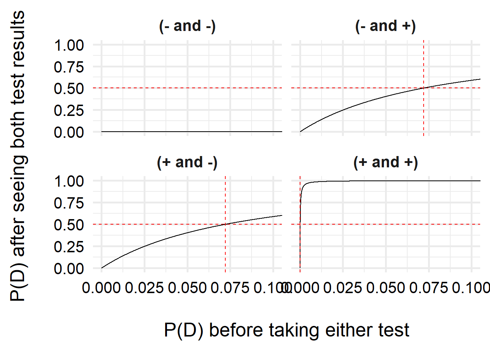

df <-
expand.grid(
test1 = c("-", "+"),
test2 = c("-", "+"),
p = seq(0, 1, length.out = 100000)
)
df$pd_1 <- ifelse(
df$test1 == "-",
# NPV = ( spec(1-p) ) / ( spec(1-p) + (1 - sens)(1-p) )
1 - ((0.99 * (1 - df$p)) / (0.99 * (1 - df$p) + 0.15 * df$p)),
# PPV = ( sens(p) ) / ( sens(p) + (1 - spec)(1-p) )
(0.85 * df$p) / (0.85 * df$p + 0.01 * (1 - df$p))
)
df$pd_2 <- ifelse(
df$test2 == "-",
# NPV = ( spec(1-p) ) / ( spec(1-p) + (1 - sens)(1-p) )
1 - ((0.99 * (1 - df$pd_1)) / (0.99 * (1 - df$pd_1) + 0.15 * df$pd_1)),
# PPV = ( sens(p) ) / ( sens(p) + (1 - spec)(1-p) )
(0.85 * df$pd_1) / (0.85 * df$pd_1 + 0.01 * (1 - df$pd_1))
)
df$test_res <- paste0("(", df$test1, " and ", df$test2, ")")
intercepts <-
df |>
group_by(test_res) |>
summarize(
i = which.min(abs(pd_2 - 0.5)),
x = p[i],
y = 0.5,
.groups = "drop"
)Pic related: this morning a coworker let me know they had tested positive for COVID-19! As someone who actually prefers to go into the office, I knew that this was one of the dangers, so I was at least prepared for this to happen. I grabbed my government-mailed COVID-19 rapid tests from the closet, checked the expiration date, sat down at the table, and…remembered that flu rapid tests have high false positive rates. Admittedly, I know much more about flu diagnostic testing than COVID.
The package insert for the Abbott BinaxNOW tests alleges a 91.7% sensitivity (95% CI: 73.0% - 98.9%), but with the 73% lower bound and my skeptical nature, I decided I better go ahead and do two tests. Of course, being a math degree holder, I can certainly work out for myself how to use Bayes’ Rule to update my beliefs about my COVID status after seeing two tests, but I decided to google it to see if there are any quick and easy guides. And of course, most of what I found in the top google results were articles that didn’t really have much content. So, given the advice I’ve recieved from Andreas Handel and Andrew Heiss, I decided to write up my very first blog post about this subject. Finally, a subject where I feel confident enough to write a blog post about it.
Diagnostic test sensitivity and specificity
Every diagnostic test that produces a dichotomous outcome (for example, COVID-19 positive vs. COVIC-19 negative) has some margin of error. When the test gives you a positive diagnosis, it never means a 100% chance that you are positive. Instead, the test has a probability of being positive, given that you actually have the disease. This probability is called the sensitivity of the test. In math notation, we would write
\[\mathrm{sensitivity} = P\left(+ \mid D\right)\]
where \(D\) is the event that you have the disease (we’ll call the event that you don’t have the disease \(\lnot D\)) and \(+\) is the event that you have a positive test (we’ll call the event you have a negative test \(-\)). Note that there are only four possibilities with this kind of test.
- True positive: You actually have the disease, and you test positive.
- False positive: You don’t have the disease, but you test positive.
- False negative: You actually have the disease, but you test negative.
- True negative: You don’t have the disease, and you test negative.
Using these definitions, the sensitivity of the test is also called the “true positive rate”. Similarly, there is another metric for the test called the specificity, which is called the “true negative rate” and represents the probability that you test negative, given that you do not have the disease. Mathematically, we would write
\[\mathrm{specificity} = P(- \mid \lnot D).\]
These quantities are intrinsic to the test. Theoretically, every type of diagnostic test has a true sensitivity and specificity that we can estimate by using the test on people whose disease status we know. In the US, the companies that make these tests are required to do these studies before their products can be approved by the FDA.
For the rest of this blog post, we’ll use the slightly more conservative numbers provided in the package insert: in a multi-site clinical study, the test was estimated to have a sensitivity of 85% and a specificity of 99% (rounding to the nearest percentage).
However, the sensitivity and specificity don’t tell us the information that we actually want to know. What I want to know is, given that I tested negative, what is the probability that I do not have COVID-19?
Bayes’ Rule and the PPV/NPV
In math notation, the quantity that we want to calculate is
\[P(D \mid +),\]
which is sort of the opposite of the sensitivity of the test. Fortunately, statistics has a convenient way to “flip” the conditional probability: Bayes’ Rule.
\[P(D \mid +) = \frac{P(+ \mid D)P(D)}{P(+)} = \frac{\mathrm{sensitivity} \cdot \mathrm{prevalence}}{\text{probability of testing positive}}\]
So, you see that there are two additional components here that we currently don’t know: the prevalence of the disease, which we call \(P(D)\), and the probability of testing positive on the test, \(P(+)\).
We can use another trick to get \(P(+)\) called the law of total probability:
\[P(+) = P(+ \mid D) P(D) + P(+ \mid \lnot D) P(\lnot D).\]
Using some math, we can rewrite this. We know that \(P(+ \mid D)\) is the sensitivity, or true positive rate, so we can rease that \(P(+ \mid \lnot D)\) is the true negative rate. Additionally, since we either have or don’t have the disease (there is no other outcome), we know that \(P(\lnot D) = 1 - P(D)\), so we get
\[P(+) = \text{TPR} \cdot P(D) + \text{FPR} \cdot (1 - P(D)).\]
We can get the false positive rate from the specificity by noting that, given you have a negative test, you must either have the disease or not (there are only these two options), so then
\[1 = P(+ \mid D) + P(+ \mid \lnot D) = \mathrm{TPR} + \mathrm{FPR}.\]
Therefore, the false positive rate is \(\mathrm{TPR} = 1 - 0.99 = 0.01\). Now we just need to know the prevalence of disease. Of course, I had issues getting the Georgia Department of Public Health’s tracker to work, but when I checked the CDC’s COVID data tracker, there was a reported rate of 150.39 cases per 100,000 population, which works out to a prevalence percentage (cases per 100 people) of 0.15% or 0.0015.
So finally we can work out that
\[P(+) = (0.85)(0.0015) + (0.01)(0.9985) = 0.00128 + 0.00999 \approx 0.01270,\]
or about \(1.3\%\). (For Athens-Clarke County, Georgia, on June 24, 2022.) Now that we have estimated the probability of a positive test in general, we can compute the value we actually want, which as I mentioned is called the positive predictive value.
So, given that we have a positive test, the probability of actually having COVID would be
\[\mathrm{PPV} = P(D \mid +) = \frac{P(+ \mid D)P(D)}{P(+)} = \frac{0.85\cdot 0.0015}{0.0127} \approx 0.1004 = 10.04\%.\]
That might seem low, but of course your risk of having COVID (your personal \(P(D)\)) increases drastically if you’ve been around someone else who tested positive. Later on, I’ll vary this number so we can see this effect in action.
Conversely, since you’ve already seen that I tested negative, we might want the negative predictive value: the probability of actually being negative, given that the test was negative. We compute this similarly, so I won’t walk through all the steps this time. We have
\[\mathrm{NPV} = P(\lnot D \mid -) = \frac{P(- \mid \lnot D)P(\lnot D)}{P(-)} = \frac{P(- \mid \lnot D)P(\lnot D)}{P(- \mid \lnot D)P(\lnot D) + P(- \mid D)P(D)},\]
which works out mathematically in the same way as the PPV, and we get
\[\mathrm{NPV} = \frac{0.99 \cdot 0.9985}{(0.99 \cdot 0.9985) + (0.15\cdot0.0015)} \approx 0.9998 \approx 99.8\%.\]
Again, remember that this is heavily dependent on what we chose as the prevalence.
Bayesian Updating
Now, what if we have two positive test results? Clearly, getting the probability that we have the disease given that we have two positive tests is more complicated than just multiplying the probability by 2 (if we kept doing that, we could get a probability larger than 1, which doesn’t make sense).
Fortunately, Bayes’ Rule lets us update our beliefs using the knowledge that we have. We can use our predicted probability that we have the disease from before as our new probability. That is, we’ll repeat the same calculation, but this time we’ll use a \(P(D_{\mathrm{new}}) = P(D \mid +)\). Other than this, we leave the sensitivity and specificity alone–the only part we’ll update in our new calculation is our probability than we have the disease.
\[\mathrm{PPV}_\mathrm{new} = P(D \mid +) = \frac{P(+ \mid D)P(D)}{P(+ \mid D) P(D) + P(+ \mid \lnot D) P(\lnot D)} = \frac{0.85\cdot 0.1004}{0.85\cdot 0.1004 + 0.01 \cdot 0.8996} \approx 0.9046.\]
Wow! Just by taking one more test and updating our prior beliefs about the probability of the disease, the probability that we have the disease jumped from \(10\%\) to \(90\%\). We could continue taking tests, and calculating \(P(D \mid \text{test result})\) as many times as we wanted, using this to update \(P(D)\) in each round of testing.
Updating multiple times and varying \(P(D)\)
Let’s assume you both your Abbot binax NOW test in a pack of 2 (this is the packaging format that I got in the mail from the government). There are three options you can get: two negative tests, one positive and one negative test, and two positive tests.
(In this case, getting a positive then a negative test will give you the same final probability as getting a negative then a positive test. This is not true for every Bayesian updating scenario in the world, but it is true for all simple binary diagnostic test examples like this one. For the simulation I’ll do below, I’ll leave in both because it’s easier to code, and to convince you that it doesn’t matter.)
Based on the results we get, we are interested in estimating the probability that we have the disease, but to do so we need to choose what we think the original \(P(D)\) is (our prior probability that we have the disease). Sometimes, the prevalence is a good choice. Many times, it isn’t–for example, if you’ve been in a croweded supermarket with lots of people not wearing masks, your \(P(D)\) increases with every second you spend in the store. So let’s calculate our final probability after seeing the tests based on a spectrum of different prior \(P(D)\) beliefs.
And we’ll plot the results.
ggplot( df, aes(x = p, y = pd_2) ) +
geom_line() +
geom_hline(yintercept = 0.5, lty = 2, color = "red") +
geom_vline(
data = intercepts,
aes(xintercept = x),
lty = 2, color = "red"
) +
facet_wrap(vars(test_res)) +
labs(x = "\nP(D) before taking either test",
y = "P(D) after seeing both test results\n") +
theme_minimal(base_size = 20) +
theme(
axis.text = element_text(color = "black"),
strip.text = element_text(face = "bold")
)
Let’s also zoom in a bit so you can see the positive/positive results better.
ggplot( df, aes(x = p, y = pd_2) ) +
geom_hline(yintercept = 0.5, lty = 2, color = "red") +
geom_line() +
geom_vline(
data = intercepts,
aes(xintercept = x),
lty = 2, color = "red"
) +
facet_wrap(vars(test_res)) +
labs(x = "\nP(D) before taking either test",
y = "P(D) after seeing both test results\n") +
coord_cartesian(xlim = c(0, 0.1)) +
theme_minimal(base_size = 20) +
theme(
axis.text = element_text(color = "black"),
strip.text = element_text(face = "bold")
)
Interestingly, we can see that one we have a positive test, our belief that we have COVID increases a lot, even with very small prior probabilities (\(<10\%\))! If we have two positive tests, it is very likely that we have COVID–this is due to the high specificity of the test (the test is unlikely to generate false positive results).
For two negative tests, the results do not change quite as steeply, due to the higher uncertainty–the test is more likely to make false negative results than false positives. However, unless my prior risk of COVID-19 is quite high, I can feel pretty comfortable saying I don’t have COVID. But just in case, I’ll isolate over the weekend and test again before going back to the office!
Last updated
2022-06-24 12:50:12 EDT
Details
sessionInfo()R version 4.1.2 (2021-11-01)
Platform: x86_64-w64-mingw32/x64 (64-bit)
Running under: Windows 10 x64 (build 19044)
Matrix products: default
locale:
[1] LC_COLLATE=English_United States.1252
[2] LC_CTYPE=English_United States.1252
[3] LC_MONETARY=English_United States.1252
[4] LC_NUMERIC=C
[5] LC_TIME=English_United States.1252
attached base packages:
[1] stats graphics grDevices datasets utils methods base
other attached packages:
[1] ggplot2_3.3.6 dplyr_1.0.9
loaded via a namespace (and not attached):
[1] pillar_1.7.0 compiler_4.1.2 tools_4.1.2 digest_0.6.29
[5] jsonlite_1.8.0 evaluate_0.15 lifecycle_1.0.1 tibble_3.1.7
[9] gtable_0.3.0 pkgconfig_2.0.3 rlang_1.0.2 cli_3.3.0
[13] rstudioapi_0.13 yaml_2.3.5 xfun_0.31 fastmap_1.1.0
[17] withr_2.5.0 stringr_1.4.0 knitr_1.39 generics_0.1.2
[21] vctrs_0.4.1 grid_4.1.2 tidyselect_1.1.2 glue_1.6.2
[25] R6_2.5.1 fansi_1.0.3 rmarkdown_2.14 farver_2.1.0
[29] purrr_0.3.4 magrittr_2.0.3 scales_1.2.0 ellipsis_0.3.2
[33] htmltools_0.5.2 colorspace_2.0-3 renv_0.15.5 labeling_0.4.2
[37] utf8_1.2.2 stringi_1.7.6 munsell_0.5.0 crayon_1.5.1 Reuse
CC BY SA